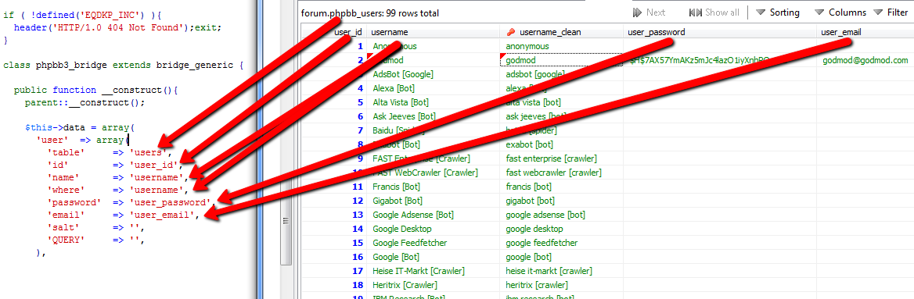

Create a Bridge
Contents
What is a Bridge?
A bridge uses the login credentials of other CMS/Boards to log user into EQdkp Plus. Of course you can enhance your bridge to support Single Sign-On, Synchronisation of Profilfields and much more.
Creating a new Bridge
In this tutorial, we will create a bridge for phpbb3, a very popular Board. The bridge needs an ID used for the filename and the classname. The Bridge-ID must be lowercase and mustn't contain any blank spaces. In our example, we will use phpbb3 as our Bridge-ID, so please replace xxx or phpbb3 with your own Bridge-ID.
The frame
First, I have to create a new file, called "xxx.bridge.class.php". xxx stands here for phpbb3. This file must be in the folder "eqdkp_root/core/bridges". Now, I create the frame of my class.
<?php
if ( !defined('EQDKP_INC') ){
header('HTTP/1.0 404 Not Found');exit;
}
class phpbb3_bridge extends bridge_generic {
public function __construct(){
parent::__construct();
}
}
?>Please make sure that you name the class "xxx_bridge", in this case "phpbb3_bridge".
Name of the Bridge
To better identify the Bridge, you can give the Bridge an name who will be used instead of the Bridge-ID.
$this->name = "phpBB3";Data-Array
The Data-Array contains all needed information about the User-, Group- and Usergroup-Table. The Bridge-Handler will use this information to Build the Querys needed to get the data. Needed indexes: user, groups and user_group. Empty Data-Array:
$this->data = array(
'user' => array(
'table' => '',
'id' => '',
'name' => '',
'where' => '',
'password' => '',
'email' => '',
'salt' => '',
'QUERY' => '',
),
'groups' => array(
'table' => '',
'id' => '',
'name' => '',
'QUERY' => '',
),
'user_group' => array(
'table' => '',
'group' => '',
'user' => '',
'QUERY' => '',
'FUNCTION' => '',
),
);User-Table
The User-Table contains all informationen about the User from the CMS/Board.
| Index | Description |
|---|---|
| table | The Name of the user-table, but without the prefix. If the table is names phpbb_users, insert users. |
| id | Name of the column containing the user-id |
| name | Name of the column containing the username |
| where | Name of the column the given Username should be compared with |
| password | Name of the column containing the password |
| Name of the column containing the email | |
| salt (optional) | Name of the column containing the Salt used for hashing the password |
| QUERY (optional) | The given query will be executed instead of the default one from the Bridge-Handler. The Username will replaced if you use _USERNAME_ String. Example-Query: "SELECT user_id as id, username as name, user_password as password, user_email as email FROM ___users WHERE username = '_USERNAME_'" |
___ will be replaced automatically through the right table-prefix choosen by the Administrator from the EQdkp Plus. 
{kind=link}
Group-Table
The Group-Table contains all informationen of the usergroups, for example the ID and the Name of the group
| Index | Description |
|---|---|
| table | The Name of the Group-Table, but without the prefix. If the table is names phpbb_groups, insert groups. |
| id | Name of the column containing the group-id |
| name | Name of the column containing the group-name |
| QUERY (optional) | The given query will be executed instead of the default one from the Bridge-Handler. Example-Query: "SELECT group_id as id, group_name as name FROM ___groups" |
{kind=link}
User-Group-Table
The User-Group-Table contains the connection between user and the groups.
| Index | Description | |||||||||||||||
|---|---|---|---|---|---|---|---|---|---|---|---|---|---|---|---|---|
| table | The Name of the Group-Table, but without the prefix. If the table is names phpbb_groups, insert groups. | |||||||||||||||
| group | Name of the column containing the group-id | |||||||||||||||
| user | Name of the column containing the user-id | |||||||||||||||
| QUERY (optional) | The given query will be executed instead of the default one from the Bridge-Handler. You can access the UserID by using the _USERID_ String. Example-Query: "SELECT group_id as group, user_id as user FROM ___user_group WHERE user_id = '_USERID_'". | |||||||||||||||
| FUNCTION (optional) | Add here the name of the function that should be called to get the Usergroups.
| |||||||||||||||
{kind=link}
Functions-Array
In the Functions-Array you can define functions called by the Bridge-Handler. You must define this functions in your bridge-class, but the name can be choosen freely. Empty Functions-Array:
$this->functions = array(
'login' => array(
'callbefore' => '',
'function' => '',
'callafter' => '',
),
'logout' => '',
'autologin' => '',
'sync' => '',
);| Index | Description |
|---|---|
| login => callbefore | Function will be called before Login |
| login => function | This function will be executed instead of the Bridge-Handler login-function |
| login => callafter | Function will be called, if login was successfull |
| logout | Will be called when user logges out |
| autologin | Used for autologin a user |
| sync | Used for syncing Userdata |
For the phpbb3-Bridge, we need an "login => callafter" - function to check if the user is active and for initiating the Single Sign-On. The "logout"-function will be used to destroy the Single Sign-On. Also, we will use a "sync"-function to sync profiledata from the Board with EQdkp Plus.
$this->functions = array(
'login' => array(
'callbefore' => '',
'function' => '',
'callafter' => 'phpbb3_callafter',
),
'logout' => 'phpbb3_logout',
'autologin' => '',
'sync' => 'phpbb3_sync',
);As you can see, we prefixed our functions with "phpbb3_".
Settings-Array
The Settings-Array contains bridge-specific settings displayed at the administration-page of the bridge.
$this->settings = array(
'cmsbridge_disable_sso' => array(
'fieldtype' => 'checkbox',
'name' => 'Disable Single Sign-On',
'help' => 'User will not be logged in automatically at phpbb3 when he logges into EQdkp Plus',
),
'cmsbridge_disable_sync' => array(
'fieldtype' => 'checkbox',
'name' => 'Disable Profildata-Sync',
'help' => 'Disables Sync of Profildata between phpbb3 and EQdkp Plus',
),
);| Index | Description |
|---|---|
| Index | The Index will be used for the ID of the Setting, you can access it through $core->config('your_index') |
| fieldtype | Fieldtype, e.g. checkbox, text, ... |
| name | Description of the Setting |
| help | Help-Message |
Sync-fields
If your Bridge syncs profilefields, the EQdkp User should change this fields in his CMS/Forum and not anymore at the EQdkp Plus. Therefore, you can set the fields that should be disabled at the usersettings.
$this->sync_fields = array(
'icq',
'town',
'interests',
'birthday',
'msn',
'user_email',
'username',
);Needed functions
There is one function you have to define in your bridge-class, called "check_password"
check_password
This function is used for comparing if the given Password is correct
| Params | ||
| $password | string | The Password the user entered on login |
| $hash | string | The Password-Hash saved at the CMS/Forum-Database |
| $strSalt | string | The Salt used for hashing the Password, may be empty |
| $boolUseHash | boolean | If $password is a hash |
| Returns | ||
| boolean | if password is correct | |
Optinal functions
convert_username
If this function is defined, it will be used to convert the username
| Params | ||
| $strUsername | string | The Username entered on login |
| Returns | ||
| string | converted username | |
Finished Bridge
Here's the finished Bridge (we have removed some code of functions owning to phpbb3 to reduce the length.)
<?php
if ( !defined('EQDKP_INC') ){
header('HTTP/1.0 404 Not Found');exit;
}
class phpbb3_bridge extends bridge_generic {
public function __construct(){
parent::__construct();
$this->name = "phpBB3";
$this->data = array(
'user' => array(
'table' => 'users',
'id' => 'user_id',
'name' => 'username',
'where' => 'username',
'password' => 'user_password',
'email' => 'user_email',
'salt' => '',
'QUERY' => '',
),
'groups' => array(
'table' => 'groups', //without prefix
'id' => 'group_id',
'name' => 'group_name',
'QUERY' => '',
),
'user_group' => array(
'table' => 'user_group',
'group' => 'group_id',
'user' => 'user_id',
'QUERY' => '',
),
);
$this->functions = array(
'login' => array(
'callbefore' => '',
'function' => '',
'callafter' => 'phpbb3_callafter',
),
'logout' => 'phpbb3_logout',
'autologin' => '',
'sync' => 'phpbb3_sync',
);
$this->settings = array(
'cmsbridge_disable_sso' => array(
'fieldtype' => 'checkbox',
'name' => 'cmsbridge_disable_sso',
),
'cmsbridge_disable_sync' => array(
'fieldtype' => 'checkbox',
'name' => 'cmsbridge_disable_sync',
),
);
$this->sync_fields = array(
'icq',
'town',
'interests',
'birthday',
'msn',
'user_email',
'username',
);
}
//Needed function
public function check_password($password, $hash, $strSalt = '', $boolUseHash){
$itoa64 = './0123456789ABCDEFGHIJKLMNOPQRSTUVWXYZabcdefghijklmnopqrstuvwxyz';
if (strlen($hash) == 34)
{
return ($this->_hash_crypt_private($password, $hash, $itoa64) === $hash) ? true : false;
}
return (md5($password) === $hash) ? true : false;
}
public function phpbb3_callafter($strUsername, $strPassword, $arrUserdata, $boolLoginResult, $boolUseHash){
global $core;
//Is user active?
if ($boolLoginResult){
if ($arrUserdata['user_inactive_reason'] != '0') {
return false;
}
//Single Sign On
if ($core->config['cmsbridge_disable_sso'] != '1'){
$this->phpbb3_sso($arrUserdata);
}
}
return true;
}
public function phpbb3_sso($arrUserdata){
global $env;
$user_id = $arrUserdata['id'];
$strSessionID = md5(rand().rand());
$this->db->query("DELETE FROM ".$this->prefix."sessions WHERE session_user_id='".$this->db->escape($user_id)."'");
$query = $this->db->query("SELECT * FROM ".$this->prefix."config");
$result = $this->db->fetch_rowset($query);
if (is_array($result)){
foreach ($result as $row){
$arrConfig[$row['config_name']] = $row['config_value'];
}
}
//PW is true, logg the user into our Forum
$arrSet = array(
'session_user_id' => (int) $user_id,
'session_start' => (int) time(),
'session_last_visit' => (int) time(),
'session_time' => (int) time(),
'session_browser' => (string) trim(substr($env->useragent, 0, 149)),
'session_forwarded_for' => '',
'session_ip' => $env->ip,
'session_autologin' => 0,
'session_admin' => 0,
'session_viewonline' => 1,
'session_id' => $strSessionID,
'session_page' => '',
'session_forum_id' => 0,
);
$this->db->query("INSERT INTO ".$this->prefix."sessions :params", $arrSet);
// Set cookie
$expire = time() + 31536000;
//SID Cookie
setcookie($arrConfig['cookie_name'].'_sid', $strSessionID, $expire, $arrConfig['cookie_path'], $arrConfig['cookie_domain'], $arrConfig['cookie_secure']);
//User-Cookie
setcookie($arrConfig['cookie_name'].'_u', $user_id, $expire, $arrConfig['cookie_path'], $arrConfig['cookie_domain'], $arrConfig['cookie_secure']);
setcookie($arrConfig['cookie_name'].'_k', '', $expire, $arrConfig['cookie_path'], $arrConfig['cookie_domain'], $arrConfig['cookie_secure']);
return true;
}
public function phpbb3_logout(){
global $user;
$arrUserdata = $this->get_userdata($user->data['username']);
if (isset($arrUserdata['id'])){
$this->db->query("DELETE FROM ".$this->prefix."sessions WHERE session_user_id='".$this->db->escape($arrUserdata['id'])."'");
}
setcookie($arrConfig['cookie_name'].'_sid', '', $expire, $arrConfig['cookie_path'], $arrConfig['cookie_domain'], $arrConfig['cookie_secure']);
//User-Cookie
setcookie($arrConfig['cookie_name'].'_u', '', $expire, $arrConfig['cookie_path'], $arrConfig['cookie_domain'], $arrConfig['cookie_secure']);
setcookie($arrConfig['cookie_name'].'_k', '', $expire, $arrConfig['cookie_path'], $arrConfig['cookie_domain'], $arrConfig['cookie_secure']);
}
public function phpbb3_sync($arrUserdata){
global $core;
if ($core->config['cmsbridge_disable_sync'] == '1'){
return false;
}
$sync_array = array(
'icq' => $arrUserdata['user_icq'],
'town' => $arrUserdata['user_from'],
'interests' => $arrUserdata['user_interests'],
'birthday' => $this->_handle_birthday($arrUserdata['user_birthday']),
'msn' => $arrUserdata['user_msnm'],
);
return $sync_array;
}
private function _handle_birthday($date){
list($d, $m, $y) = explode('-', $date);
if ($y != ''){
return str_replace('-','.', $date);
}
return false;
}
//...
//removed some function from phpbb3
//...
}
?>Params/Returns for function defined at Function-Array
login => callbefore
| Params | ||
| $strUsername | string | The Username entered on login |
| $strPassword | string | The Password entered on login |
| $boolAutoLogin | boolean | If user wants an Autologin |
| $boolUseHash | boolean | If password is a hash |
login => function
| Params | ||
| $strUsername | string | The Username entered on login |
| $strPassword | string | The Password entered on login |
| $boolAutoLogin | boolean | If user wants an Autologin |
| $boolUseHash | boolean | If Password is a hash |
| Returns | ||
| array | array (
'status' => 1, //Loginresult, 1 = login successful
'user_id' => ...
....
.... //The whole userdata, like id, name, email, ...
....
) | |
login => callafter
| Params | ||
| $strUsername | string | The Username entered on login |
| $strPassword | string | The Password entered on login |
| $boolAutoLogin | boolean | If user wants an Autologin |
| $arrUserdata | array | Array containing the Userdata (from CMS/Board) |
| $boolLoginResult | boolean | If Login from login => function or Bridge-Handler-Login was successful |
| $boolUseHash | boolean | If Password is a hash |
| Returns | ||
| boolean | login successful? | |
logout
- no params/returns
autologin
| Params | ||
| $arrCookieData | array | Cookie-Data, contains Session-ID and Password-Hash for Autologin |
| Returns | ||
| boolean | autologin successful? | |
sync
| Params | ||
| $arrUserdata | array | Array containing the Userdata (from CMS/Board) |
| Returns | ||
| array | The index is always the Name of the EQdkp Column at the usertable e.g. $sync_array = array(
'icq' => $arrUserdata['user_icq'],
'town' => $arrUserdata['user_from'],
'interests' => $arrUserdata['user_interests'],
'birthday' => $this->_handle_birthday($arrUserdata['user_birthday']),
'msn' => $arrUserdata['user_msnm'],
); | |
Bridge-Handler-Functions
get_user_groups
Return all Usergroups of the Forum/CMS
| Returns | ||
| array | Key: Group-ID, Value: Group-Name | |
get_userdata
Returns Forum/CMS-Userdata of given User
| Params | ||
| $name | string | Username |
| Returns | ||
| array | Array containing the Userdata from the CMS/Forum | |
check_user_group
Checks if the CMS/Forum-User is in the given Usergroup
| Params | ||
| $intUserID | int | User-ID from CMS/Forum |
| Returns | ||
| boolean | User Member of given Group? | |